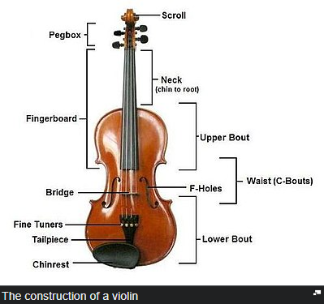

A violin generally consists of a spruce top (the soundboard, also known as the top plate,
table, or belly),
maple ribs and back, two endblocks, a neck, a bridge, a soundpost, four strings, and various
fittings,
optionally including a chinrest, which may attach directly over, or to the left of, the tailpiece. A distinctive
feature of a violin body is its hourglass-like shape and the arching of its top and back. The hourglass shape
comprises two upper bouts, two lower bouts, and two concave C-bouts at the waist, providing clearance for the

bow. The "voice" or sound of a violin depends on its shape, the wood it is made from, the graduation (the
thickness profile) of both the top and back, the varnish that coats its outside surface and
the skill of the
luthier in doing all of these steps. The varnish and especially the wood continue to improve with
age, making
the fixed supply of old well-made violins built by famous luthiers much sought-after.
The majority of glued joints in the instrument use animal hide glue rather than common white glue for a number
of reasons. Hide glue is capable of making a thinner joint than most other glues. It is reversible (brittle
enough to crack with carefully applied force and removable with hot water) when disassembly is
needed. Since
fresh hide glue sticks to old hide glue, more original wood can be preserved when repairing a joint. (More
modern glues must be cleaned off entirely for the new joint to be sound, which generally involves scraping
off
some wood along with the old glue.) Weaker, diluted glue is usually used to fasten the top to the
ribs, and the
nut to the fingerboard, since common repairs involve removing these parts. The purfling running around the edge
of the spruce top provides some protection against cracks originating at the edge. It also allows the top to
flex more independently of the rib structure. Painted-on faux purfling on the top is usually a
sign of an
inferior instrument. The back and ribs are typically made of maple, most often with a matching striped
figure,
referred to as flame, fiddleback, or tiger stripe.
The neck is usually maple with a flamed figure compatible with that of the ribs and back. It carries the
fingerboard, typically made of ebony, but often some other wood stained or painted black on
cheaper instruments.
Ebony is the preferred material because of its hardness, beauty, and superior resistance to wear. Fingerboards
are dressed to a particular transverse curve, and have a small lengthwise "scoop," or concavity, slightly more
pronounced on the lower strings, especially when meant for gut or synthetic strings. Some old
violins (and some
made to appear old) have a grafted scroll, evidenced by a glue joint between the pegbox and neck.
Many authentic
old instruments have had their necks reset to a slightly increased angle, and lengthened by about a centimeter.
The neck graft allows the original scroll to be kept with a Baroque violin when bringing its neck into
conformance with modern standards.
Top
Of Site
This site was made By Fatih DemiralTM
Adios.